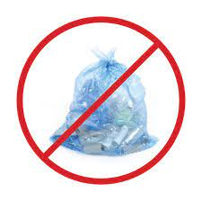
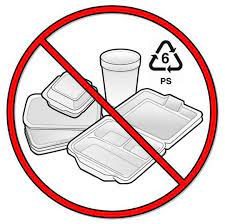
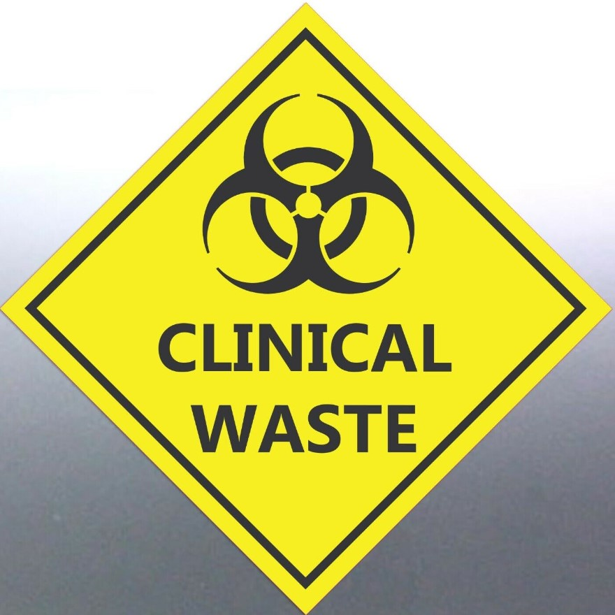

Who is A2Z recyclers?
Our commitment to quality service and reliable equipment ensures that our bins meet safety and hygiene standards, while promoting recycling and reducing waste. Trust us to provide a competitive quote for bin hire with no hidden fees or charges, making waste management easy and stress-free for your construction or industrial project.
Contact us
What We Recycle
Not acccepted recycling
No bagged
recyclables

Do not bag recyclables. They must be loose in the bin. If you collect your recyclables in a bag, empty them directly into your bin and reuse the bag!
No polystyrene foam
& plastic

Polystyrene foam, plastic "to-go" containers and cups are made of non-recyclable materials, and are not acceptable in the curbside recycling program.
No medical
waste

Medical waste can pose a safety hazard and never goes in curbside recycling or waste bins.
News
New technology could boost Australia’s plastics recycling
Envirotech company Samsara Eco has developed an enzyme that breaks down plastic, known as a polymer, into its original building blocks, or monomers, for reuse to manufacture new food-grade plastics and polyester. Australia currently recycles 16% of its plastic waste, with less than 3% making it to market domestically. This falls far short of the stated national goal of “70% of plastic waste recycled by 2050.” read more
by Dan Holmes | University of Sydney
August 17, 2022

Revolutionary Australian battery recycling technology startup advances its breakthrough battery metals recovery process
Australian battery recycling technology company, Battery Pollution today revealed a co-operaton agreement with Australia’s University of Newcastle focussed on the development of proprietary processes for the recovery of cobalt, lithium, graphite and nickel from spent Electric Vehicle and Energy Storage System batteries. read more
by Nataliia Petrychuk | Tafe Ultimo
Tuesday, 6 June 2023
New process could enable more efficient plastics recycling
The accumulation of plastic waste in the oceans, soil, and even in our bodies is one of the major
pollution issues of
modern times, with over 5 billion tons disposed of so far. Despite major efforts to recycle
plastic products, actually
making use of that motley mix of materials has remained a challenging issue.
A key problem
is that plastics come in so many different varieties, and chemical processes for breaking them
down into a
form that can be reused in some way tend to be very specific to each type of plastic.read more
by David L. Chandler | MIT News Office
October 6, 2022
Testimonials
“The invoicing process is straightforward and there are no delays which makes it easy to
tidy up with no chase ups.”
Ema Barton
“I have found the service provided by A27Z recycling very reliable and more importantly
immensely helpful in assisting our sites
meet our company environmental goals and values.”
Jon Smitt
“They are really helpful and always looking for feedback on their services to help them
continuously improve. The entire
site feels a sense of accomplishment knowing they are helping the environment through
the recycling service Vanden are
able to provide.”
Nataliia P
“The times I have spoken with A27Z recycling they have been very helpful and provide a
reliable service, allowing us to dispose
of our waste in an environmentally sustainable manner”
Mark
Jackson